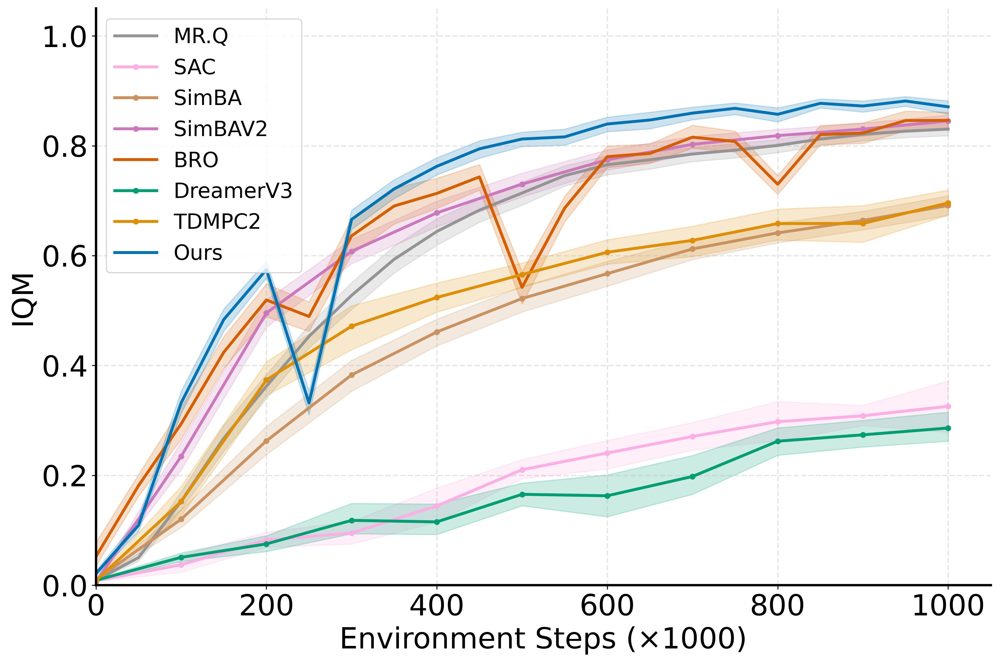
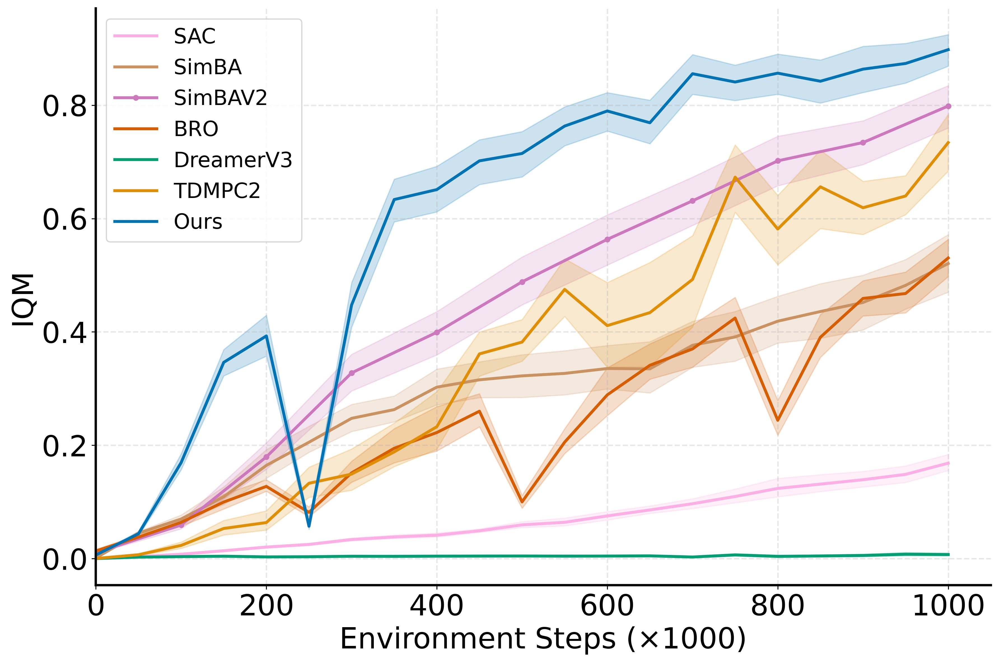
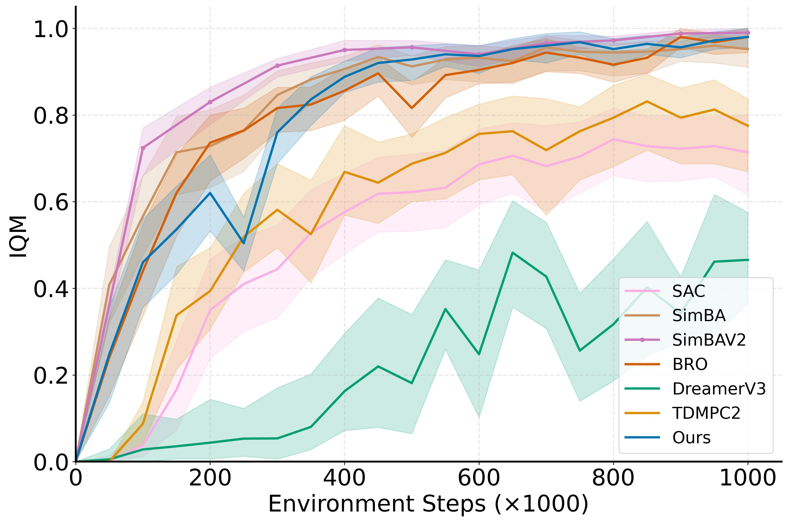

Abstract
Model-based reinforcement learning promises better sample efficiency by learning a world model and using it to generate synthetic training data for the policy. In practice, however, compounding model errors bias the synthetic rollouts and often hurt more than they help—especially on high-dimensional tasks with complex contact dynamics.
We introduce WIMLE, a model-based RL method that tackles this problem at its source. WIMLE trains world models with Implicit Maximum Likelihood Estimation (IMLE), a mode-covering generative approach that captures multi-modal transition dynamics instead of collapsing to a single average prediction. An ensemble of IMLE models provides both aleatoric and epistemic uncertainty estimates, which are used to automatically scale the influence of each synthetic transition during policy learning—keeping useful long-horizon information while suppressing unreliable predictions.
We evaluate WIMLE on over 40 continuous-control tasks across DeepMind Control Suite, HumanoidBench, and MyoSuite. WIMLE delivers substantial gains in sample efficiency and asymptotic performance over strong model-free and model-based baselines, achieving state-of-the-art results on the most challenging locomotion and manipulation tasks.
Learned Policies
WIMLE learns high-quality locomotion policies on hard DeepMind Control tasks using significantly fewer environment interactions than prior methods.


Method
WIMLE combines three ideas into a simple, effective model-based RL pipeline.
Multi-modal world model
Most world models predict a single Gaussian output per state-action pair, averaging over the true diversity of outcomes. WIMLE instead uses IMLE—a latent-variable generator trained to cover all modes in the data. This lets the model faithfully represent stochastic and contact-rich dynamics where the same action can produce very different results.
Dual uncertainty estimation
WIMLE distinguishes two sources of prediction error. Aleatoric uncertainty (irreducible randomness) is captured by sampling diverse futures from the IMLE generator. Epistemic uncertainty (limited data) is measured by disagreement across an ensemble of independently trained world models. Together they give a per-transition confidence signal.
Uncertainty-weighted learning
Rather than truncating rollouts or discarding uncertain transitions, WIMLE keeps all synthetic data and re-weights each transition inversely by its estimated uncertainty. Confident predictions contribute fully; unreliable ones are down-weighted automatically. This preserves useful long-horizon signal while avoiding the bias that typically plagues model-based methods.
Results
Learning curves across three benchmark suites. WIMLE consistently improves sample efficiency and final performance compared to strong model-free and model-based baselines.




Citation
If you find this work useful, please cite our paper:
@inproceedings{aghabozorgi2026wimle,
title={{WIMLE}: Uncertainty-Aware World Models with {IMLE} for Sample-Efficient Continuous Control},
author={Mehran Aghabozorgi and Yanshu Zhang and Alireza Moazeni and Ke Li},
booktitle={The Fourteenth International Conference on Learning Representations},
year={2026},
url={https://openreview.net/forum?id=mzLOnTb3WH}
}